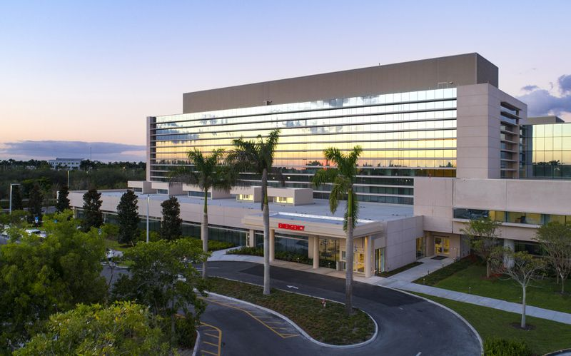

Honestidad
Integridad
Nuestro compromiso inquebrantable con la honestidad y los sólidos principios morales guía cada acción, garantizando transparencia, confianza y comportamiento ético.
Agenda tu cita en minutos, consulta nuestro directorio médico y recibe atención personalizada. Estamos contigo en cada paso de tu bienestar.

Salvador nació con la misión de hacer la salud accesible para todos: conectamos el asesoramiento médico experto con la práctica diaria, impulsados por una pasión por el bienestar y el deseo de mejorar vidas.
Nuestro compromiso inquebrantable con la honestidad y los sólidos principios morales guía cada acción, garantizando transparencia, confianza y comportamiento ético.
Construimos un entorno de apoyo e inclusión donde todos se sientan valorados y respetados, fomentando un sentido de pertenencia y apoyo mutuo.
Nos esforzamos por comprender las necesidades individuales, brindando apoyo genuino y soluciones personalizadas que promuevan el bienestar físico y emocional.
Un equipo dedicado de directores médicos y especialistas comprometidos con tu salud y bienestar.


Mario Beltré
Nutricionita Experto
Tenemos ubicaciones en todo el territorio nacional. Encuentra la más cercana a ti.
Ver ubicacioneslat: {{ hospital.position.lat }}
long: {{ hospital.position.lng }}
Teléfono: 809-555-8754
Dolores Tejedas, La Romana 22000
809-555-5555 Número principal
809-555-5555 Oficina de citas
809-555-5555 Oficina de citas (llamadas gratuita)
809-555-5555 Seguros y facturación
809-555-5555 Solicitudes de registros médicos
info-romana@hospitalsalvador.do
Horarios de servicios administrativos: 7:00 a.m a 10:00 p.m
Horarios de visitas: 7:00 a.m a 8:00 p.m
Horarios de consulta: 8:00 a.m a 8:00 p.m
Rafael Augusto Sanchez 45, Santo Domingo
809-555-5555 Número principal
809-555-5555 Facturación
809-555-5555 Oficina de citas (llamadas gratuita)
809-555-5555 Solicitud de registros de imágenes de radiología
809-555-5555 Solicitud de pasantia
809-555-5555 Traslado de pacientes a otro hospital (centro de transferencia de adminsión, 24 horas del día)
info-sd@hospitalsalvador.do
Horarios de servicios administrativos: 6:00 a.m a 12:00 p.m
Horarios de visitas: 7:00 a.m a 6:00 p.m
Horarios de consulta: 8:00 a.m a 6:00 p.m
Aquí respondemos las preguntas más comunes de nuestros pacientes.
Puedes agendar tu cita desde el directorio médico. Selecciona un doctor, elige el servicio, la fecha y hora, y completa tus datos. Recibirás un ticket de confirmación.
Aceptamos la mayoría de los seguros médicos. Durante el proceso de agendamiento puedes seleccionar tu seguro para calcular la cobertura.
Sí, desde "Mis Citas" puedes ver y gestionar tus citas programadas, incluyendo reprogramar o cancelar.
Tenemos ubicaciones en todo el territorio nacional. Visita la sección de Ubicaciones para encontrar el centro más cercano a ti.